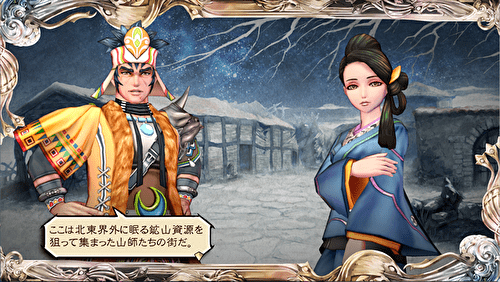
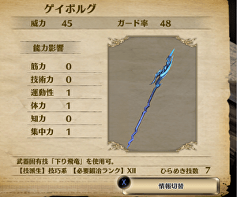

竜槍ゲイボルグ
竜槍ゲイボルグ
サガシリーズで最強クラスの威力でレアな槍と言えば竜槍という感じありますよね。ロマサガ2の竜槍ゲイボルグから始まり、ロマサガ3の竜槍スマウグ、ミンサガの竜槍マリストリクや竜槍ケレンドロウズ。サガフロ2には、竜槍ではないものの、邪龍ウロボロスという槍があります。
サガスカではロマサガ2と同じ竜槍ゲイボルグが登場します。この記事では、サガスカの竜槍がどのようなものでどうやって手に入れるのかと、元ネタであるケルト神話の槍、ゲイボルグに関する物語を整理していきます。
誰が落とす？
北東界外のイターナルドラゴン
テルミナ州のヴォルカニクドラゴン
アスワカン地下のドラゴンルーラー（木、火、土、金、水の5体）。
これらのドラゴンだけが稀に落とす「傷んだ竜槍」を鍛えることで、竜槍ゲイボルグを手にすることができます。
先日、サガスカの配信中に北東界外のイターナルドラゴンからゲットしました。イターナルドラゴンに会うまでの手順やイターナルドラゴンの対策などを以下にまとめていきます。
イターナルドラゴンはどこにいる？
イターナルドラゴンに会うためには、北東海外に伝わる物語に沿ってイベントを進める必要があります。北東海外にあるフィネムンディという街で詩人からその物語を聞くことができます。
詩人の詩
フィネムンディで聞くことができる詩人の詩です。この物語に沿ってイベントを進める必要があります。
詩人の詩の登場人物を以下に整理していきます。
アダマス
アダマスは十二星神の一柱で、鍛冶の星神です。その力を使って青銅を打ってカリドゥスの新しい心臓を作りました。
#サガスカ #サガスカーレットグレイス #緋色の野望 #どんなゲーム
— 河津秋敏 (@SaGa30kawazu) July 9, 2018
その36. 鍛冶の星神アダマス
鉱石の採掘から精錬、様々な道具の鍛造まで全てを教えた星神です。武器や防具だけでなく、農具や調理器具まで、金属製品による恩恵は全ての人に及びます。しかし、さほど人気が無いのは何故でしょうか。 pic.twitter.com/pZIuCtu9xl
カリドゥス
カリドゥスはラテン語で「猛火」という意味があります。鍛冶には火が必要なので、カリドゥスの炎はアダマスに取っては欠かせないもので、それゆえに大切な相棒だったのでしょう。その相棒を失ってしまったアダマスの心中は穏やかではなかったでしょう。
イムホキエル
イムホキエルも十二星神の一柱で、建築の星神です。その力で世界の果てに巨大な扉を建て、カリドゥスを閉じ込めました。
#サガスカ #サガスカーレットグレイス #緋色の野望 #どんなゲーム
— 河津秋敏 (@SaGa30kawazu) June 28, 2018
その25. 建築の星神イムホキエル
測量や幾何学から石や木材を切り出し運搬する技術、そして実際の建物や道路などを作り上げる土木・建築術まで、必要な全ての技術を人に与えた星神です。建築無くして人の生活無し、が信者の口癖です pic.twitter.com/HxiQkwdRwd
十二星神については以前まとめたことがあるのでこちらも是非一度見てみて下さい。
イムホキエルが建てた扉とその鍵
詩人の詩の通り、北東界外の世界の果てにはイムホキエルが建てた巨大な扉とその鍵が存在します。イターナルドラゴンに会うためにはこの鍵を手に入れる必要があります。
冬の扉
人の手で作ったとは思えないほど巨大な扉。鍵はどこにあるのでしょうか。
凍結船
扉の近くに凍結船があり、鍵がどこにあるかを知ることができます。
この航海日誌によると、鍵は湖に沈められたとのこと。湖を探してみましょう。
釣り人（氷結湖）
湖では釣り人がいて、釣りをしています。話しかけてみましょう。
大きな鍵を手に入れることができました。これで扉を開けることができるようになります。
扉の奥に行くと氷漬けの魔物がいますが、今の時点では何もありません。
アダマスが作ったブロンズの心臓
フィネムンディで開発
ブロンズの心臓を手に入れるためには、フィネムンディで鉱山開発する必要があります。
フィネムンディ初回訪問

フィネムンディ訪問2回目
開発場所①：万年桜
開発場所②：地獄門
開発場所③：底なし沼
開発場所④：大地の牙
開発場所⑤：精霊の湖
鉱山開発するとそれぞれの場所の近くに坑道が出来ます。
フィネムンディに戻って開発を一旦中断させた後、8回以上（※）戦闘するとトロッコに鉱石が積まれています。
※開発した鉱山の数に依存して必要戦闘回数は変動。北東界外の南にあるアダマスの祠に魚を奉納すると必要戦闘回数を減らすことができる。
一か所様子がおかしいので調べるとブロンズの心臓を手に入れることができます。
イターナルドラゴン
詩人の詩の通りならブロンズの心臓はこの魔物のもの・・・？
イターナルドラゴンと冥界の使者×2とバトルになります。
イターナルドラゴンと冥界の使者の対策を動画にまとめてみました。良かったら見てみて下さい。
イターナルドラゴンとの戦いに勝つと稀に傷んだ竜槍を落とします（何かの骨は固定ドロップ）。自分の場合は10回ぐらい勝ってやっとドロップしました。大体2時間ぐらいかかりました。ご参考までに。
個人的疑問
話の流れ的に、詩人の詩に出てきたアダマスの相棒の竜、カリドゥス＝イターナルドラゴンなのかと思っていました。しかしカリドゥスはラテン語で「猛火」という意味らしく、詩人の詩でも「カリドゥスの炎」と言っています。イターナルドラゴンは電撃系の攻撃ばかりで、炎は使って来ませんでした。違うドラゴンなのか？？
竜槍ゲイボルグと固有技下り飛竜
傷んだ竜槍を鍛冶屋で鍛えることで竜槍ゲイボルグを手に入れることができる。
傷んだ竜槍を鍛えることができる鍛冶屋は以下（火属性の鍛冶屋）。
- ヤクサルト辺境州：トゥワイ
- リーア辺境州：ムロス
- テルミナ州：シュート
- ケイ州：ナングーン
- ヌマディカ辺境州：ベリケ
- アスワカン：北市場
↓下の図のように、鍛冶屋のマークの所に『火』があって、背景の色が青い鍛冶屋ならOK。
↓下の図のように、『火』があっても背景の色が黒い鍛冶屋では強化できないので注意。
鍛える前後の武器のステータスは以下画像の通り。


ロマサガ2と同じく、固有技の『下り飛竜』を使うことができます。エフェクトは以下動画参照。
参考
- サガ スカーレットグレイス 緋色の野望 攻略の缶詰 敵の特殊なドロップ装備
- サガ用語辞典 Wiki* 【詩人の歌】
- ニコニコ大百科 竜槍
- 「サガ スカーレット グレイス 緋色の野望」の攻略情報サイト 北東界外
- 北東界外｜サガ スカーレットグレイス 緋色の野望 攻略の缶詰
- 「サガ スカーレット グレイス 緋色の野望」の攻略情報サイト 北東界外
竜槍の名前の由来
ゲイボルグはケルト神話（※余談参照）に登場する、クー・フーリンという半神半人の英雄が持つ槍。
※写真はwikipedia クー・フーリンより引用
かつて、二頭の海獣 コインヘン と クリードが紅海の洋上で死闘を繰り広げていました。戦いに敗れたクリードの頭骨から作られた槍がゲイボルグです。
ゲイボルグは銛のような形状で、投げれば30の鏃となって降り注ぎ、突くと相手の体内で30本の刺となって炸裂する凶悪な戦略兵器と化す。
投げた場合の能力は、敵軍に残らず刺さる、敵を逃さず命中する、稲妻のような速さで敵をまとめて貫くなどがある。
突き刺した場合の能力はより多岐に渡り、敵の全身に毒を残す、全身の内臓と血管の隙間に大釘を残す、どんな防具も貫通する、奇妙な軌道で突き刺さる、無数に枝分かれして刺さる、この槍でつけた傷は治らない、刺された者は必ず死ぬなどがある。
その能力の通り、ゲイ・ボルグで刺された相手は必ず一撃で致命傷を負っている。どちらの能力も、通常の武器にあるまじき破裂を基本としている。
参考
- クー・フリンの必殺の槍「ゲイ・ボルグ」
- wikipedia クー・フーリン
- ピクシブ百科事典 ゲイボルグ
- wikipedia ゲイ・ボルグ
- weblio ゲイ・ボルグ
- ファンタジー能力 @ ウィキ ゲイ・ボルグ（ケルト神話）
余談：ケルト神話
サガスカはケルト神話を元に作られている部分が多いため、ケルト神話について自分で情報収集したのですが、なんかややこしかったので整理してみました。今後サガスカの記事を書く上で参考になるかもしれないので記録として残しておきます（間違っている部分があったらすみません）。
ケルト神話は多くのサブグループがあり、概ねケルト語派の分枝と一致する。
├─古代ケルト宗教
├─ゲール語の神話
｜ 代表：アイルランド神話
｜ スコットランド神話
└─ブリソン諸語の神話
代表：ウェールズ神話
ゲイボルグはアイルランドの説話に登場する槍です。アイルランド神話には4大サイクル（※）と呼ばれている神話があります。4大サイクルとはアルスター物語群、神話物語群、フィン物語群、歴史物語群の4つです。アルスター物語群は、アルスターサイクル、アルスター神話群、アルスター説話群の3つに分かれます。
アイルランド神話の4大サイクルとアルスター物語群を図で整理すると以下のようになる。
├─アルスター物語群
｜ ├─アルスターサイクル
｜ ├─アルスター神話群
｜ └─アルスター説話群
├─神話物語群
├─フィン物語群
└─歴史物語群
※「サイクル」とは文学の世界で、共通の人物にまつわる話を集めた物語の群（グループ）のこと。多くは（必ずではないが）神話・伝説や歴史的人物。
参考：weblio サイクル (文学)
アイルランド神話にはモリガン（Mórrígan）という三位一体の戦いの女神が登場する。モリガンはサガスカのマリガン神の元ネタ。
#サガスカ #サガスカーレットグレイス #緋色の野望 #どんなゲーム
— 河津秋敏 (@SaGa30kawazu) June 24, 2018
その21. 戦技の星神マリガン
戦闘及び戦争の技術を人に与えた星神です。その星座は複数の様々な武器だと言われますが、ユラニウス家では二刀を構えたマリガン神の姿だと解釈されています。十二星神で最も力ある神だと言う人もいます pic.twitter.com/Vd1tXSpqvc
また、モリガンはヴァハ（Macha）、バズヴ（Badb）（ネヴァン（Nemhain）とも呼ばれる）と行動を共にする。ヴァハはヴァッハ神の元ネタであり、ネヴァンはネヴァーンの元ネタであると考えられる。
#サガスカ #サガスカーレットグレイス #緋色の野望 #どんなゲーム
— 河津秋敏 (@SaGa30kawazu) June 25, 2018
その22. 魔術の星神ヴァッハ
華麗に白黒赤青黄の五精霊を操る魔術の女神様です。五精霊を表す星が星座を象り、精霊のバランスが崩れると星の明るさが変わると言われています。無骨な武神マリガンとは仲が良くありません。 pic.twitter.com/nBZCZgUZ1d
ネヴァーン
— 生田泰浩（ゲーム開発者） (@y_ikuta) August 5, 2022
サガスカの世界観の懐の深さに繋がっているブッ飛んだキャラ
「魔法使い。使う術は○○さんに聞いて」と
河津さんからのバトルキャラ発注書の雑な扱いに
「？？」となりながら
イベントを作ったスタッフに詳細を聞いてめっちゃ笑った覚えがあります
仲間加入イベントは生田のお気に入り pic.twitter.com/yU3qUNEuK1
このように、サガスカはケルト神話を参考にした名前が結構あります。サガスカが好きな人はケルト神話を調べてみると面白いかもしれないですね。
参考
- wikipedia ケルト神話
- wikipedia アイルランド神話
- weblio アイルランド神話
- wikipedia アルスター物語群
- wikipedia 神話物語群
- wikipedia フィン物語群
- weblio 歴史物語群
- 歴史物語群